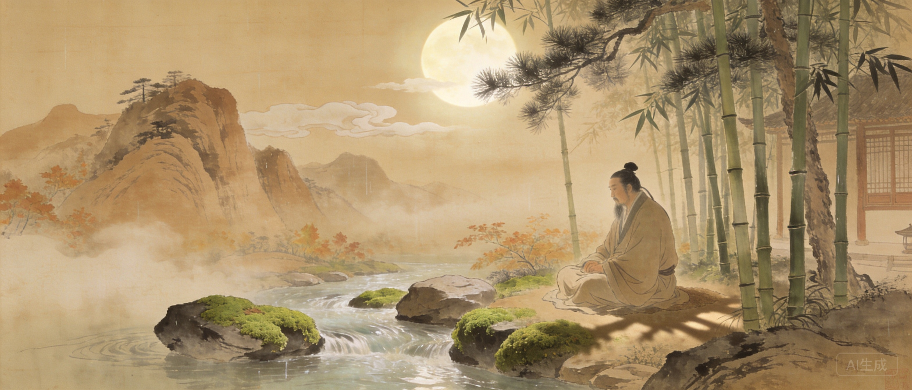

字摩诘，号摩诘居士。精通诗文、书画、音乐。
二十一岁进士及第，任太乐丞。因伶人舞黄狮获罪被贬。
张九龄提拔为右拾遗。出使河西。
安史之乱，被安禄山俘虏，囚于洛阳菩提寺。
弟王缙愿削官赎兄之罪，免于追究。
晚年隐居辋川，半官半隐。卒年六十。
苏轼评价王维：「味摩诘之诗，诗中有画；观摩诘之画，画中有诗。」王维将绘画的构图、色彩、光影意识注入诗歌。「大漠孤烟直，长河落日圆」——十个字就是一幅完美的构图。晚年在终南山辋川别业，王维将二十个景点各赋一诗，编为《辋川集》。这是中国文学史上最美的隐居日志。
苏轼评价王维：「味摩诘之诗，诗中有画；观摩诘之画，画中有诗。」王维同时也是南宗山水画的开创者。
王维的名字取自《维摩诘经》。晚年隐居辋川，与裴迪唱和《辋川集》。
被俘期间听闻乐工雷海青被肢解，王维写下「万户伤心生野烟，百官何日再朝天」。这首诗后来救了他的命。
王维同时是南宗山水画之祖和盛唐顶级诗人。他的诗里有勃鲁盖尔般的构图意识——「大漠孤烟直，长河落日圆」，孤烟是垂直线，长河是水平线，落日是圆，大漠是面。四个几何元素构成一幅完美的画。苏轼说他「诗中有画，画中有诗」，但这八个字远不足以描述王维真正的绝技：他让诗歌拥有了绘画的视觉语法，又让绘画拥有了诗歌的留白力量。
辋川唱和的挚友。两人在辋川各写二十首诗，一唱一和。
王维最敬重的诗人。写有「红颜弃轩冕，白首卧松云」相赠。
愿削官为兄赎罪，是王维免死的关键。